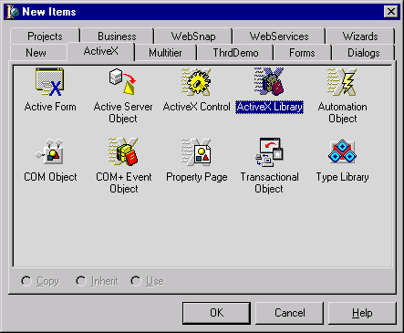
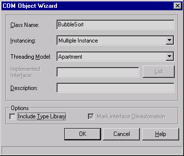
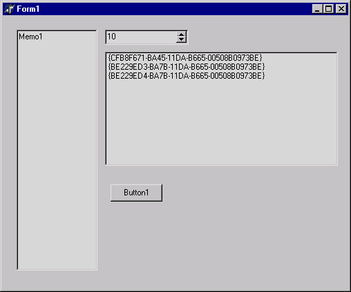
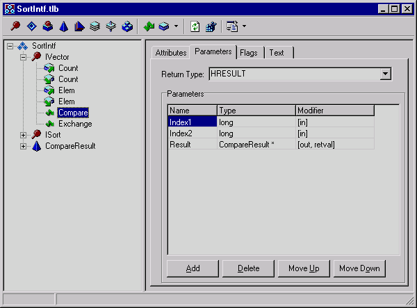
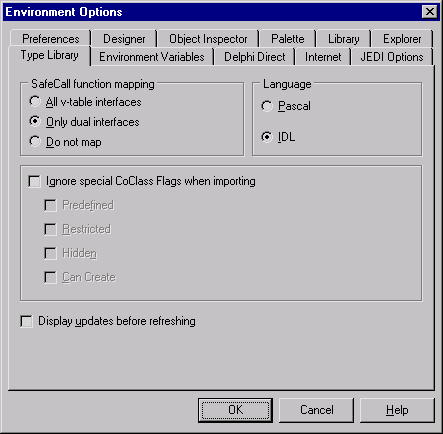
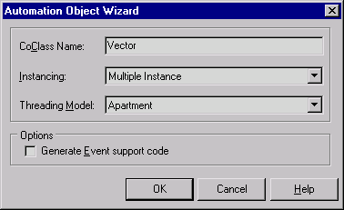
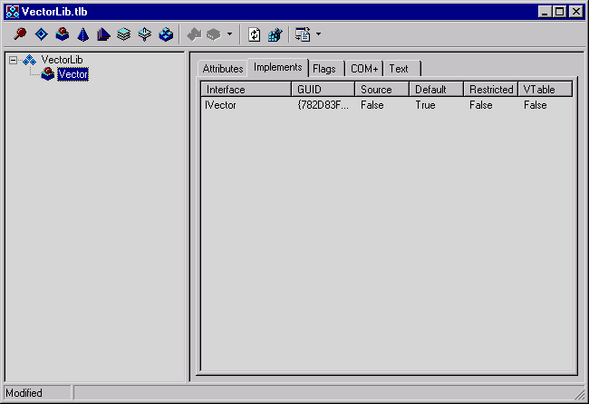
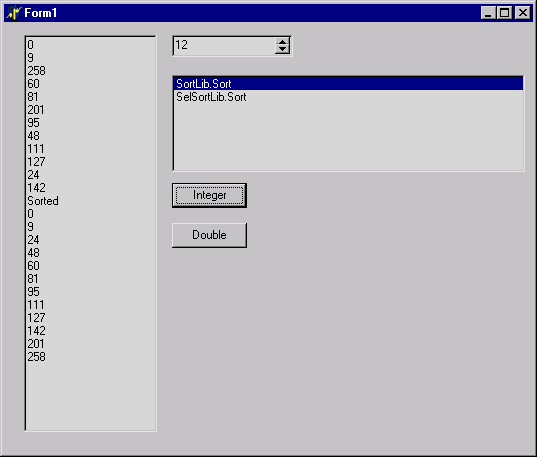

Интерфейсы и плагины
Введение
Пожалуй, каждому программисту со временем приходит в голову мысль, что его замечательной программе не хватает гибкости. И действительно, допустим, есть большая программа, и в нее понадобилось внести небольшие изменения. Не важно, по какой причине. Но для этого ее надо откомпилировать, проверить, а потом еще и поставить на рабочие места. Нет нужды говорить, что это достаточно долгое занятие. В другом случае может возникнуть желание, чтобы другие программисты могли расширять функциональность программы, а когда программа - единое целое, то им надо полностью поставить исходный код, еще и с описанием, где что находится, какие библиотеки нужны и так далее.
И программист приходит к выводу, что очень желательно, чтобы его программа состояла из набора отдельных модулей (плагинов), каждый из которых был бы независим от других. Тогда при необходимости можно изменить и отладить только один модуль, а сторонним программистам дать шаблон интерфейса. Программ, построенных таким образом, множество, и остается только завидовать. Чаще всего модульность реализуется на основе механизмов dll, динамических библиотек. Вот только со стандартной dll возникают трудности: экспортируются только процедуры, да и ansistring не так просто передать. А хочется ведь передавать в модули и объекты. Конечно, это возможно, но... С этого момента плагины можно писать только на Delphi, и, мало того, именно на той версии, с которой начиналась разработка, никто ведь не гарантирует, что внутреннее представление объекта не поменяется с изменением версии среды разработки.
И, как ни странно, мало кто обращает внимание на механизм, который есть в любой современной версии Windows, и который предназначен прежде всего именно для взаимодействия модулей и программ. Я имею в виду COM. И если учесть, что в Delphi работа с COM является достаточно простым делом, очень странным кажется тот факт, что в большинстве случаев применение этой технологии ограничивается, например, выдачей в Excel отчетов или работой с TWebBrowser.
Но эта технология позволяет легко создавать модульные приложения, и с достаточно низкими затратами. Все, что нужно - реализовать интерфейсы к объектам, и обмениваться этими интерфейсами. И совершенно не важно, на какой версии Delphi написан плагин, фактически, он может быть написан вообще на другом языке программирования: COM не зависит от языка. При этом СОМ - объектная технология, тесно интегрированная в Delphi.
Я хочу показать, как можно с помощью COM решить задачу создания плагинов, маленьких частей программы, которые могут быть изменены независимо от основной программы. В частности, здесь я рассматриваю, как создать несколько библиотек, по-разному реализующих одну и ту же функциональность.
Итак, что же такое интерфейсы и с чем их едят? Говоря простым языком, интерфейс COM - это всего лишь структура, которая содержит объявления методов. И не более того. Ближайший аналог в Delphi - объявление класса.
Для создания плагинов нужно понимать, что у интерфейса нет экземпляра, это просто декларация, которая может быть понята на любом языке программирования, в котором есть возможность работы с COM. Собственно код и данные должны содержаться в объекте, который реализует этот интерфейс, для него даже есть специальное название, кокласс (coclass). И может быть сколько угодно коклассов, реализующих один и тот же интерфейс. Единый интерфейс с различным наполнением - как раз то, что нужно.
То есть, нужно просто создать ту реализацию интерфейса, которая нужна, а дальше просто общаться с ней через интерфейс, который везде одинаков.
Давайте рассмотрим конкретный пример. Для этого я взял три метода сортировки массива, которые нагло утянул из проекта в demos\threads. Это BubbleSort, SelectionSort и QuickSort. Потоки и визуализацию рассматривать не будем, по крайней мере, сейчас. Задача стоит в том, чтобы создать три плагина для сортировки массива, реализующих каждый свой метод, и подключать один из них по мере надобности. Разумеется, каждая реализация должна находиться в своей библиотеке (dll).
Объекты СОМ
Сначала рассмотрим простейший способ.
Как можно догадаться, прежде всего нам понадобится интерфейс. Затем - библиотека, содержащая его реализацию. Я предлагаю начать с библиотеки, так удобнее. При этом я не буду выдавать подробные инструкции вроде "мееедленно подведите указатель мышки к пункту меню File...", я просто покажу, что нужно:

 Можно догадаться, что первым будет реализован метод пузырька. Обратите внимание, что Type Library не нужна. В библиотеку добавляется модуль, в котором уже объявлен класс, потомок TComObject. Не хватает только интерфейса. И, поскольку библиотеки типов нет, нужно объявить его вручную, и, желательно, в отдельном модуле для дальнейшего использования. Но предварительно надо сохранить то, что получилось. Я дал название библиотеке BubbleLib, а модулю кокласса - CBubble. Теперь добавим модуль с интерфейсом:
unit SortIntf;
interface
type
ISortIntf = interface
['{BE229ED0-BA7B-11DA-B665-00508B0973BE}']
procedure Sort(var A: Variant); stdcall;
end;
implementation
end.
Каждый интерфейс идентифицируется своим номером, GUID, который написан в первой его строке. Чтобы его получить, достаточно нажать Ctrl+Shift+G. При этом среда вызывает функцию CoCreateGUID и вставляет его в позицию курсора. Разумеется, при каждом новом вызове выдается новый GUID. Часто GUID интерфейса называют IID, идентификатор интерфейса. Это делается для того, чтобы отличать идентификатор интерфейса от, например, идентификатора кокласса, который обычно называют CLSID.
Можно заметить, что в метод передается почему-то Variant, а никак не массив. К сожалению, здесь действуют те же правила, что и с обычной dll: передавать только безопасные типы данных. Вот я и собираюсь передавать Safe array.
Теперь в модуле CBubble дописываем его реализацию (не забыв добавить SortIntf в секцию uses):
type
TBubbleSort = class(TComObject, ISortIntf)
protected
procedure Sort(var A: Variant); stdcall;
end;
И в разделе implementation:
uses ComServ, Variants;
{ TBubbleSort }
procedure TBubbleSort.Sort(var A: Variant);
var
I, J, T: Integer;
HighBound, LowBound: integer;
begin
HighBound := VarArrayHighBound(A, 1);
LowBound := VarArrayLowBound(A, 1);
for I := HighBound downto LowBound do
for J := LowBound to HighBound - 1 do
if A[J] > A[J + 1] then
begin
T := A[J];
A[J] := A[J + 1];
A[J + 1] := T;
end;
end;
Я не стал вызывать VarArrayLock, хотя это ускорило бы работу. Весь этот пример создается как простейшая иллюстрация создания и реализации интерфейсов, и не более того. После написания кода остается только вызвать Register ActiveX server для регистрации библиотеки как сервера COM. При этом в моей версии Delphi 6 почему-то создается файл BubbleLib_TLB.pas и в файл проекта записывается строка {$R *.tlb}. Одновременно создается библиотека типов, которая совершенно не нужна. Я так и не нашел причины, по которой она создается. Можно просто удалить файлы BubbleLib.tlb, BubbleLib_TLB.pas и убрать эту строку. Я так и сделал, причем перерегистрировать библиотеку не требуется. Регистрация требуется только если изменились идентификаторы интерфейсов или добавлены новые: все они должны быть записаны в реестре.
Две оставшиеся библиотеки создаются абсолютно аналогично, только, разумеется, модуль SortIntf просто подключается к проекту.
Для иллюстрации того, как можно использовать эти три компонента, я сделал маленькое приложение, которое назвал BubbleTest. Создал я его сразу после реализации первой библиотеки, а потом решил не менять название.
Это обычное приложение с единственной формой, на которую я кинул TMemo, TSpinEdit, TListBox и кнопку. Мемо - для отображения массива, лист - для списка классов, ну а остальное - подручные стредства. Кроме этого, к проекту надо опять же подключить модуль SortIntf, чтобы программа знала, с каким интерфейсом придется работать. А для создания списка классов я просто перенес константы с CLSID (идентификаторами коклассов) из каждой библиотеки в модуль формы. После этого - несколько обработчиков:
const
Class_BubbleSort: TGUID = '{CFB8F671-BA45-11DA-B665-00508B0973BE}';
Class_SelectionSort: TGUID = '{BE229ED3-BA7B-11DA-B665-00508B0973BE}';
Class_QuickSort: TGUID = '{BE229ED4-BA7B-11DA-B665-00508B0973BE}';
implementation
uses COMObj, SortIntf;
{$R *.dfm}
procedure TForm1.Button1Click(Sender: TObject);
var
Bubble: ISortIntf;
i: integer;
A: Variant;
HighBound, LowBound: integer;
Class_ID: TGUID;
ElemCount: integer;
begin
//Получаем нужный CLSID
Class_ID := StringToGUID(ListBox1.Items[ListBox1.ItemIndex]);
//Создаем класс по этому CLSID и сразу просим у него интерфейс ISortIntf
Bubble := CreateCOMObject(Class_ID) as ISortIntf;
ElemCount := SpinEdit1.Value;
//Массив создаем и записываем в мемо
A := VarArrayCreate([0,ElemCount-1], varInteger);
Memo1.Lines.Clear;
HighBound := VarArrayHighBound(A, 1);
LowBound := VarArrayLowBound(A, 1);
for i := LowBound to HighBound do
begin
A[i] := random(300);
Memo1.Lines.Add(IntToStr(A[i]));
end;
//А вот, собственно, и вызов метода плагина
Bubble.Sort(A);
//Остается показать результат
Memo1.Lines.Add('Sorted');
HighBound := VarArrayHighBound(A, 1);
LowBound := VarArrayLowBound(A, 1);
for i := LowBound to HighBound do
begin
Memo1.Lines.Add(IntToStr(A[i]));
end;
end;
procedure TForm1.FormShow(Sender: TObject);
begin
with ListBox1.Items do
begin
Clear;
Add(GUIDToString(Class_BubbleSort));
Add(GUIDToString(Class_SelectionSort));
Add(GUIDToString(Class_QuickSort));
end;
ListBox1.ItemIndex := 0;
end;
Сама форма у меня в результате получилась такая:

Теперь можно выбрать любую из трех строк в списке, и при нажатии на кнопку будет загружен нужный плагин, и вызван его метод Sort для сортировки случайного массива из 10 элементов. Собственно, это и все. Освобождать интерфейс явне не надо, при выходе из обработчика интерфейс будет освобожден, и библиотека с коклассом выгрузится. Если нужно освободить интерфейс явно, достаточно присвоить Bubble := nil (интерфейс - это указатель, почти) или просто присвоить ему другой интерфейс. Список CLSID я создал попутно просто для иллюстрации, как обращаться с GUID. Можно догадаться, что в этот список можно загрузить строки, например, из текстового файла, и копирование констант из библиотек прямо в код приложения будет не нужно.Теперь посмотрим, что получилось. На первый взгляд, сделанное очень мало отличается от использования трех обычных библиотек, экспортирующих каждая свой метод Sort. Однако, есть и преимущества: во-первых, для работы теста не нужно знать где находится библиотека и как она называется. Нужен только идентификатор нужного класса. Во-вторых, не нужно заботиться о загрузке и выгрузке этой библиотеки, можете быть уверены, что она загрузится когда будет нужна и выгрузится, когда все интерфейсы освободятся. В-третьих, все-таки мы работаем с объектом, хоть и содержащим только один метод. В-четвертых, не нужно заботиться об уничтожении созданного объекта, Delphi делает это автоматически. Далее я рассмотрю, как можно использовать объекты и интерфейсы более полноценным образом.
Автоматизация
Разумеется, нельзя не заметить, что все еще имеются некоторые тонкости в использовании плагинов. Все еще нужен модуль с описанием интерфейса, который используется везде, где есть этот интерфейс. Это неудобно тем, что при создании плагина на других языках это описание придется переводить. О CLSID я не говорю: хотя он нужен для создания класса, его всегда можно передать в виде строки. Наконец, въедливый программист может спросить об обработке ошибок в методе Sort. Что будет, если подать на вход не массив, а обычный variant, например, со строкой? Будет выдано исключение, из которого можно понять только его тип, модуль, в котором оно произошло, и адрес. Это не слишком удобно.
Потому я хочу предложить сделать все по-другому. Помните, я в свое время говорил, что type library не нужна? Использовать ее конечно не обязательно, но очень удобно. Фактически, библиотека типов выполняет почти ту же роль, что и файл SortIntf.pas, но при этом содержит в себе еще и дополнительную информацию, например, описание кокласса. При этом все объявления в библиотеке типов не зависят от языка программирования. Кроме всего сказаного, в VCL содержится множество классов, работающих именно с библиотекой типов и обеспечивающих дополнительные функции, в том числе и обработку исключений.
Но перед тем, как начинать работу с бибиотекой типов, рекомендуется все хорошо обдумать. Дело в том, что библиотека типов будет использоваться подобно SortIntf.pas, то есть везде, где нужно описание интерфейса. И в случае, когда потребуется изменить эти описания, потребуется повторное подключение этой библиотеки. Прежде всего, надо определить хотя бы примерный состав объектов, которые нужны. Например, в первой части происходила сортировка простого массива чисел. Но на практике сортируют обычно не просто числа, а записи или строки. Да что угодно, лишь бы эти объекты были сравнимы. Поэтому в метод сортировки лучше передавать не массив чисел, а массив объектов, которые должны просто знать, как сравнить себя с другим таким же объектом. Поскольку у нас COM, то вместо объектов будут использоваться, разумеется, интерфейсы.
Что мне хочется: есть три метода сортировки, значит, надо создать три класса. Если каждый класс будет содержать методы работы с массивом, причем одинаковые, то весьма желательно выделить эту часть в отдельный модуль. Далее все три класса будут использовать то, что в нем есть. Таким образом, нам нужен интерфейс для представления массива и интерфейс для его сортировки.
Начнем. По аналогии с созданием файла описания интерфейса создадим библиотеку типов. Отдельную от всего, в ней будут храниться только описания интерфейсов. Создать ее можно из той же вкладки ActiveX, элемент так и называется Type Library. Откроется редактор, и в него надо внести наши интерфейсы. При добавлении интерфейса он сразу является потомком IDispatch, как раз то, что требуется. Вот что у меня получилось в итоге:
 Я объявил два интерфейса: IVector, обеспечивающий работу с массивом, и ISort, у которого есть один метод, принимающий на вход массив и сортирующий его. Кроме этого, есть перечисление CompareResult. Дело в том, что методу Sort совсем не обязательно самому сравнивать и переставлять элементы вектора, эти операции можно поручить самому вектору. Поэтому я ввел два метода, которые обеспечивают именно сравнение и перестановку элементов, принимая на вход их индексы. Вот как выглядит метод Compare:
Я объявил два интерфейса: IVector, обеспечивающий работу с массивом, и ISort, у которого есть один метод, принимающий на вход массив и сортирующий его. Кроме этого, есть перечисление CompareResult. Дело в том, что методу Sort совсем не обязательно самому сравнивать и переставлять элементы вектора, эти операции можно поручить самому вектору. Поэтому я ввел два метода, которые обеспечивают именно сравнение и перестановку элементов, принимая на вход их индексы. Вот как выглядит метод Compare: Кстати, если список параметров выглядит непривычно, то это всего лишь потому, что у меня установлено отображение библиотеки типов на IDL, языке определения интерфейсов. По умолчанию же в Delphi стоит отображение в нотации паскаля. Но в IDL видно, что на самом деле результат любого метода имеет тип HResult. И менять его так просто нельзя, это - соглашение, принятое для интерфейсов автоматизации. Каждый метод должен вернуть свой код завершения. Ничего страшного, параметр Result имеет модификаторы out, retval, и при отображении все будет нормально и привычно (если, конечно, действует соглашение safecall). Вот, кстати, мои настройки:
 Интерфейсы, кстати, создались именно дуальные, поэтому методы будут иметь модификатор safecall.
Так вот, в результате работы метод Compare возвращает константу из набора CompareResult, которая показывает порядок элементов с индексами Index1 и Index2 относительно друг друга. Этого вполне достаточно для большинства методов сортировки.
После того, как библиотека создана, ее надо сохранить и зарегистрировать. Регистрация - вторая справа иконка, с узнаваемым значком реестра. Собственно, все, что она делает - это именно регистрация библиотеки в реестре. После этого библиотеку можно закрыть и приступить к реализации этих интерфейсов.
Путь прежний: создаем новую библиотеку типов. Вот только добавлять будем не COM Object, а Automation Object, который работает с библиотекой типов и реализует необходимую функциональность. Сначала создадим объект для интерфейса IVector:
 Будет создан модуль, содержащий в себе класс с именем, как несложно догадаться, TVector, и реализующий интерфейс IVector. Вот только не тот интерфейс, что нам нужен. Дело в том, что для COM не так важны названия интерфейсов, как их идентификаторы. И вот IID этого интерфейса совсем другой. Поэтому открываем библиотеку типов этой ActiveX library (по-английски, а то какая-то тавтология получается) и нагло удаляем оттуда интерфейс IVector, оставив только кокласс Vector. Теперь, чтобы стал известен наш интерфейс, нужно сделать пару не таких уж тривиальных шагов: встать на корень дерева, открыть вкладку uses и в контекстном меню вкладки выбрать "Show all type libraries". Затем долго листать список, пока не наткнешься на библиотеку SortIntf, и выбрать ее. Если ее там нет, то надо ее зарегистрировать (см выше). После этого снова выбрать в меню пункт "Show selected". Все, интерфейс стал известен.
Теперь нужно добавить этот интерфейс на вкладку Implements кокласса Vector:
 Снова воспользовавшись контекстным меню. Проект, кстати, я назвал VectorLib. Вот и все, остается только нажать на кнопку обновления, и в модуле будут автоматически сгенерированы шаблоны для методов. Кроме, того, в каталоге проекта будет создан файл SortIntf_TLB.pas, представляющий собой описание нашей библиотеки на паскале. Его нужно подключить к проекту, и записать в секцию uses модуля. После этого можно реализовывать методы интерфейса:
unit CVector;
{$WARN SYMBOL_PLATFORM OFF}
interface
uses
ComObj, ActiveX, VectorLib_TLB, StdVcl, SortIntf_TLB;
type
TVector = class(TAutoObject, IVector)
private
FArray: array of integer;
protected
function Compare(Index1, Index2: Integer): CompareResult; safecall;
function Get_Count: Integer; safecall;
function Get_Elem(Index: Integer): OleVariant; safecall;
procedure Exchange(Index1, Index2: Integer); safecall;
procedure Set_Count(Value: Integer); safecall;
procedure Set_Elem(Index: Integer; Value: OleVariant); safecall;
{ Protected declarations }
end;
implementation
uses ComServ;
function TVector.Compare(Index1, Index2: Integer): CompareResult;
begin
Result := crLower;
if FArray[Index1] > FArray[Index2] then
Result := crGreater;
if FArray[Index1] = FArray[Index2] then
Result := crEqual;
end;
function TVector.Get_Count: Integer;
begin
Result := Length(FArray);
end;
function TVector.Get_Elem(Index: Integer): OleVariant;
begin
Result := FArray[Index];
end;
procedure TVector.Exchange(Index1, Index2: Integer);
var
T: integer;
begin
T := FArray[Index1];
FArray[Index1] := FArray[Index2];
FArray[Index2] := T;
end;
procedure TVector.Set_Count(Value: Integer);
begin
if Value <> Length(FArray) then
SetLength(FArray, Value);
end;
procedure TVector.Set_Elem(Index: Integer; Value: OleVariant);
begin
FArray[Index] := Value;
end;
initialization
TAutoObjectFactory.Create(ComServer, TVector, Class_Vector,
ciMultiInstance, tmApartment);
end.
Немного поясню. Хотя Count и Elem объявлены как свойства (property), их все равно надо реализовывать через методы
Get_... и Set_.... Просто потому, что у интерфейса, собственно говоря, данных нет, есть только методы. И, кстати, метод Compare приобрел вполне цивилизованный вид, как, впрочем, и все остальные. Это произошло именно из-за модификатора safecall.
Реализацию я выбрал самую простую, через динамический массив. Не думаю что нужно комментировать код, все должно быть достаточно понятно. Свойство Elem имеет тип Variant, для универсальности.
Теперь нужно опять зарегистрировать получившийся сервер, и у нас появится кокласс, который реализует вектор целых чисел.
Вторая библиотека - реализация интерфейса ISort, который будет сортировать методом пузырька. Создается аналогично предыдущей, только на этот раз кокласс называем "Sort" и, подключив библиотеку SortIntf, реализуем интерфейс ISort:
unit CSort;
{$WARN SYMBOL_PLATFORM OFF}
interface
uses
ComObj, ActiveX, SortLib_TLB, StdVcl, SortIntf_TLB;
type
TSort = class(TAutoObject, ISort)
protected
procedure Sort(const Vector: IVector); safecall;
{ Protected declarations }
end;
implementation
uses ComServ;
procedure TSort.Sort(const Vector: IVector);
var
I, J: Integer;
begin
for I := Vector.Count - 1 downto 0 do
for J := 0 to Vector.Count - 2 do
if Vector.Compare(J, J + 1) = crGreater then
Vector.Exchange(J, J + 1);
end;
initialization
TAutoObjectFactory.Create(ComServer, TSort, Class_Sort,
ciMultiInstance, tmApartment);
end.
Как можно догадаться, это своеобразная реализация метода пузырька, несмотря на то, что модуль называется CSort. Так получилось, а переименовывать достаточно тяжело.
И тут же возникает мысль, а дальше? Ну сделаем мы еще пару классов Sort, но понадобится же их как-то опознавать. А при подключении библиотеки можно было видеть, сколько всего есть библиотек типов в системе, не перебирать же их. Разумеется, способ выделить свои классы есть, и называется он Component Categories, то есть категории компонентов. Фактически, это просто способ записи группы интерфейсов в реестр, для которого есть встроенный механизм. И, разумеется, этот механизм основан на интерфейсах. Остается его только задействовать, и лучше всего регистрировать класс в категории одновременно с регистрацией сервера. На самом деле, это даже проще: при регистрации сервера ActiveX в системе вызываются методы UpdateRegistry всех имеющихся фабрик классов. Фабрика, разумеется, у нас создается, обратите внимание на секцию initialization выше. Нужно создать потомок этой фабрики, перекрыв метод UpdateRegistry:
unit SortFactory;
interface
uses COMObj;
type
TSortAutoObjectFactory = class(TAutoObjectFactory)
public
procedure UpdateRegistry(Register: boolean); override;
end;
implementation
uses ActiveX, SysUtils, SortConsts;
{ TSortAutoObjectFactory }
procedure TSortAutoObjectFactory.UpdateRegistry(Register: boolean);
var
CatReg: ICatRegister;
CatInfo: TCATEGORYINFO;
begin
inherited;
OleCheck(CoCreateInstance(CLSID_StdComponentCategoryMgr, nil,
CLSCTX_INPROC_SERVER, ICatRegister, CatReg));
if Register then
begin
CatInfo.catid := CATID_SortServer;
CatInfo.lcid := $0419;
StringToWideChar(Sort_CatDesc, CatInfo.szDescription,
Length(Sort_CatDesc) + 1);
OleCheck(CatReg.RegisterCategories(1, @CatInfo));
OleCheck(CatReg.RegisterClassImplCategories(ClassID, 1, @CATID_SortServer));
end else
begin
OleCheck(CatReg.UnRegisterClassImplCategories(ClassID, 1, @CATID_SortServer));
DeleteRegKey(Format('CLSID\%s\Implemented Categories', [GUIDToString(ClassID)]));
end;
end;
end.
Разумеется, категория тоже распознается по ее GUID, но кроме этого у нее есть и описание на нормальном языке. Обе этих константы я вынес в отдельный файл, по той причине, что все приложения должны знать, в какой категории искать классы сортировки:
unit SortConsts;
interface
const
CATID_SortServer: TGUID = '{782D841E-BB21-11DA-B666-00508B0973BE}';
Sort_CatDesc = 'Библиотеки сортировки. Тестовый пример';
implementation
end.
Теперь остается подменить тип библиотеки в модуле CSort:
initialization
TSortAutoObjectFactory.Create(ComServer, TSort, Class_Sort,
ciMultiInstance, tmApartment);
end.
Вот и все. Вторая библиотека, SelSortLib, создана аналогично, я покажу только метод Sort:
procedure TSort.Sort(const Vector: IVector);
var
I, J: Integer;
begin
for I := 0 to Vector.Count - 2 do
for J := Vector.Count - 1 downto I + 1 do
if Vector.Compare(I,J) = crGreater then
Vector.Exchange(I,J);
end;
Если честно, третью мне создавать уже как-то и не хочется, тем более что для иллюстрации материала вполне достаточно.
Перейдем сразу к тестовому приложению. Создаем обычное приложение с формой, и делаем Import Type library, выбрав из списка SortIntf... Хотя погодите. Для окончательной иллюстрации мне еще хочется реализовать вектор действительных чисел. Сделаю это я прямо в этом приложении. Впрочем, импорт ничему не мешает, сделал так сделал. Выбираем опять создание Automation Object, прямо в приложении, подключаем SortIntf, и реализуем IVector. Вот только создан-то объект, к которому можно обратиться снаружи, а мне это не нужно. Ничего, как говорится, нет Factory - нет кокласса (я немного переиначил). Но отключить ее не совсем правильно, нужно сделать еще пару действий: во-первых, поменять тип кокласса на TAutoIntfObject. Это класс, который реализует интерфейсы - потомки IDispatch (у нас именно такие), но при этом у него нет фабрики, то есть, кокласс должен создаваться непосредственно внутри приложения. Во-вторых, как ни странно, убрать type library с коклассом и все воспоминания о ней, то есть использование COMServ и использование модуля импорта библиотеки. И, разумеется, убрать строчку {$R *.tlb} из проекта. Этого достаточно. Теперь есть класс вектора, который недоступен снаружи, но полностью доступен самому приложению. Вот какой кокласс у меня получился:
unit CDVector;
{$WARN SYMBOL_PLATFORM OFF}
interface
uses
ComObj, ActiveX, StdVcl, SortIntf_TLB;
type
TDVector = class(TAutoIntfObject, IVector)
private
FArray: array of Double;
protected
function Compare(Index1, Index2: Integer): CompareResult; safecall;
function Get_Count: Integer; safecall;
function Get_Elem(Index: Integer): OleVariant; safecall;
procedure Exchange(Index1, Index2: Integer); safecall;
procedure Set_Count(Value: Integer); safecall;
procedure Set_Elem(Index: Integer; Value: OleVariant); safecall;
{ Protected declarations }
public
procedure FillRandom(Size: integer);
end;
implementation
function TDVector.Compare(Index1, Index2: Integer): CompareResult;
begin
Result := crLower;
if FArray[Index1] > FArray[Index2] then
Result := crGreater;
if FArray[Index1] = FArray[Index2] then
Result := crEqual;
end;
function TDVector.Get_Count: Integer;
begin
Result := Length(FArray);
end;
function TDVector.Get_Elem(Index: Integer): OleVariant;
begin
Result := FArray[Index];
end;
procedure TDVector.Exchange(Index1, Index2: Integer);
var
T: Double;
begin
T := FArray[Index1];
FArray[Index1] := FArray[Index2];
FArray[Index2] := T;
end;
procedure TDVector.Set_Count(Value: Integer);
begin
if Value <> Length(FArray) then
SetLength(FArray, Value);
end;
procedure TDVector.Set_Elem(Index: Integer; Value: OleVariant);
begin
FArray[Index] := Value;
end;
procedure TDVector.FillRandom(Size: integer);
var
i: integer;
begin
SetLength(FArray, Size);
for i := Low(FArray) to High(FArray) do
FArray[i] := Random;
end;
end.
Я просто скопировал все методы из CVector, поменяв пару слов. Кроме того, мне показалось скучным полностью повторять реализацию, объект-то доступен. Поэтому я добавил метод, который заполняет массив случайными числами, для иллюстрации того, что кокласс все же является обычным классом Delphi.
Осталось сделать простейший интерфейс:
 Это - форма уже работающего приложения. А вот ее код:
unit FSort;
interface
uses
Windows, Messages, SysUtils, Variants, Classes, Graphics, Controls, Forms,
Dialogs, StdCtrls, Spin, SortIntf_TLB;
type
TForm1 = class(TForm)
Memo1: TMemo;
ListBox1: TListBox;
btnInt: TButton;
btnDouble: TButton;
SpinEdit1: TSpinEdit;
procedure FormCreate(Sender: TObject);
procedure btnDoubleClick(Sender: TObject);
procedure btnIntClick(Sender: TObject);
private
procedure ShowSort(Vector: IVector);
{ Private declarations }
public
{ Public declarations }
end;
var
Form1: TForm1;
implementation
uses SortConsts, CDVector, COMObj, ActiveX, VectorLib_TLB;
procedure ListSortServers(List: TStrings);
var
EnumGUID: IEnumGUID;
Fetched: Cardinal;
Guid: TGUID;
CatInfo: ICatInformation;
begin
List.Clear;
OleCheck(CoCreateInstance(CLSID_StdComponentCategoryMgr, nil,
CLSCTX_INPROC_SERVER, ICatInformation, CatInfo));
OleCheck(CatInfo.EnumClassesOfCategories(1, @CATID_SortServer, 0, nil, EnumGUID));
while EnumGUID.Next(1, Guid, Fetched) = S_OK do
begin
//Переводим CLSID в более понятный вид
List.Add(ClassIDToProgID(Guid));
end;
end;
{$R *.dfm}
procedure TForm1.FormCreate(Sender: TObject);
begin
ListSortServers(ListBox1.Items);
if ListBox1.Items.Count > 0 then
ListBox1.ItemIndex := 0;
end;
procedure TForm1.btnDoubleClick(Sender: TObject);
var
TypeLib: ITypeLib;
Vector: IVector;
VecObj: TDVector;
i: integer;
begin
//Нужна библиотека типов, в которой описан IVector
OleCheck(LoadRegTypeLib(LIBID_SortIntf, 1, 0, 0, TypeLib));
VecObj := TDVector.Create(TypeLib, IVector);
VecObj.FillRandom(SpinEdit1.Value);
Vector := VecObj as IVector;
VecObj := nil; //От греха
ShowSort(Vector);
end;
procedure TForm1.btnIntClick(Sender: TObject);
var
Vector: IVector;
i: integer;
begin
Vector := CoVector.Create;
Vector.Count := SpinEdit1.Value;
for i := 0 to Vector.Count - 1 do
Vector.Elem[i] := Random(300);
ShowSort(Vector);
end;
procedure TForm1.ShowSort(Vector: IVector);
var
i: integer;
SortObj: ISort;
ProgID: string;
begin
Memo1.Lines.Clear;
for i := 0 to Vector.Count - 1 do
Memo1.Lines.Add(FormatFloat('##0.#####', Vector.Elem[i]));
//Создаем выбранный класс сортировки и сортируем
ProgID := ListBox1.Items[ListBox1.ItemIndex];
SortObj := CreateComObject(ProgIDToClassId(ProgID)) as ISort;
SortObj.Sort(Vector);
Memo1.Lines.Add('Sorted');
for i := 0 to Vector.Count - 1 do
Memo1.Lines.Add(FormatFloat('##0.#####', Vector.Elem[i]));
end;
end.
Здесь, думаю, необходимы пояснения, и довольно подробные. ListSortServers перечисляет все классы, зарегистрированные в нашей категории, и записывает не непонятную строку CLSID, а более-менее воспринимаемую строку ProgID. Это именно та строка, которая подается в функцию CreateOleObject. Да-да, все интерфейсы у нас дуальные, так что вполне возможно позднее связывание, без всякого импорта библиотеки типов. Конечно, при этом вызовы методов идут гораздо дольше, зато не надо делать импорт библиотеки типов. Здесь же я импортировал и подключил библиотеку VectorLib, для того чтобы создать и использовать вектор целых чисел.
Вектор же действительных чисел я получаю прямо из объекта, причем достаточно непривычным образом. Рассмотрим код подробно:
//Нужна библиотека типов, в которой описан IVector OleCheck(LoadRegTypeLib(LIBID_SortIntf, 1, 0, 0, TypeLib)); VecObj := TDVector.Create(TypeLib, IVector); VecObj.FillRandom(SpinEdit1.Value); Vector := VecObj as IVector; VecObj := nil; //От греха
Чтобы создать объект типа TAutoIntfObject, в его конструктор нужно подать ссылку на интерфейс нужной библиотеки типов и IID того интерфейса, который он должен реализовать. Обычно в качестве первого параметра достаточно подать COMServer.TypeLib, но в данном случае это не подходит: библиотеки типов нет, а когда она была, все равно там не было описания IVector. Поэтому нужно непосредственно подать интерфейс SortIntf.tlb. К счастью, она зарегистрирована, и нужно ее просто загрузить с получением ее интерфейса. Это и делается в первой строке. Во второй строке создается экземпляр кокласса (компилятор преобразует интерфейс к его IID во втором параметре), и далее вызывается метод класса для заполнения массива. Затем уже из самого класса получается интерфейс IVector. VecObj := nil я написал специально. Дело в том, что при доступе через интерфейс кокласс, как правило, сам следит за тем, когда ему уничтожится, точнее, этим управляет интерфейс. Поэтому пользоватся одновременно и экземпляром класса, и его интерфейсом нужно крайне аккуратно.
Остальные методы практически мало отличаются от первого примера, пожалуй, единственное отличие в том, что clsid получается из идентификатора программы. Если применяется позднее связывание, этого можно и не делать, вот, например, как можно переписать работу с массивом:
procedure TForm1.btnInt2Click(Sender: TObject);
var
V: variant;
Sort: Variant;
i: integer;
begin
V := CreateOleObject('VectorLib.Vector');
V.Count := SpinEdit1.Value;
for i := 0 to V.Count - 1 do
V.Elem[i] := Random(300);
Memo1.Lines.Clear;
for i := 0 to V.Count - 1 do
Memo1.Lines.Add(FormatFloat('##0.#####', V.Elem[i]));
Sort := CreateOleObject(ListBox1.Items[ListBox1.ItemIndex]);
Sort.Sort(V);
Memo1.Lines.Add('Sorted');
for i := 0 to V.Count - 1 do
Memo1.Lines.Add(FormatFloat('##0.#####', V.Elem[i]));
end;
Конечно, позднее связывание менее эффективно, но зато этот метод дает возможность использовать классы в языках программирования, которые не поддерживают раннего связывания, например, в VBScript. К тому же, не требуется импортировать библиотеку типов, что может быть весьма удобным, если нужно написать всего несколько строк с использованием интерфейса.
Заключение
Подведем итоги. Я показал пару способов организовать приложение в виде отдельных специализированных частей, достаточно активно взаимодействующих друг с другом. Конечно, можно было реализовать эти классы более эффективно и гибко, но я думаю, что и написанного вполне достаточно для понимания общих принципов. Все остальное, при желании, можно найти в интернете. Я также не коснулся вопроса о том, как делать визуальные плагины на основе ActiveX Form, по той причине, что это предмет для особого разговора.
Роман Игнатьев, 2006, romkin[at]pochta.ru
Взято из http://forum.sources.ru Автор: Romkin